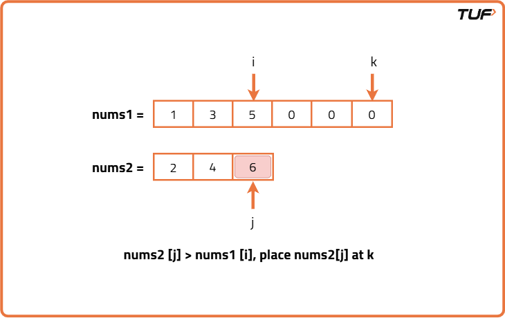
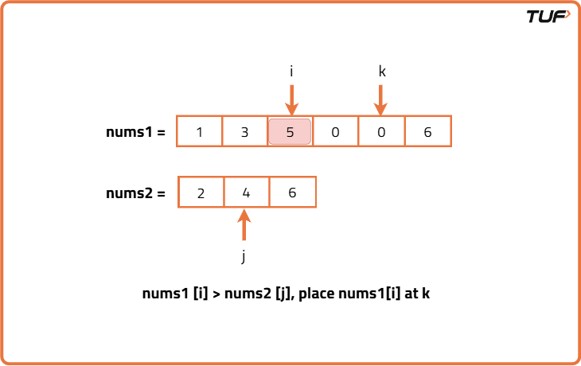
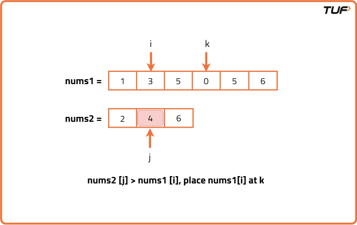
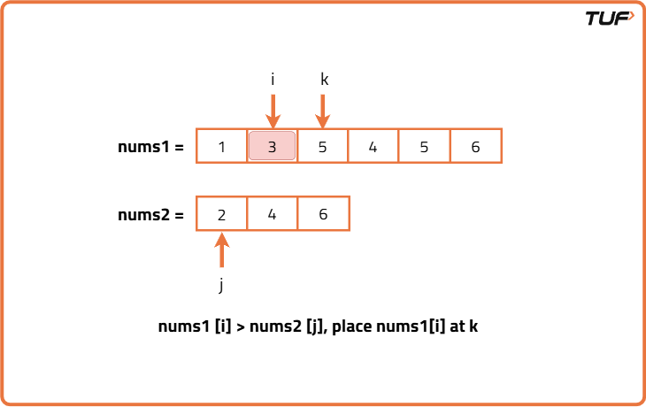
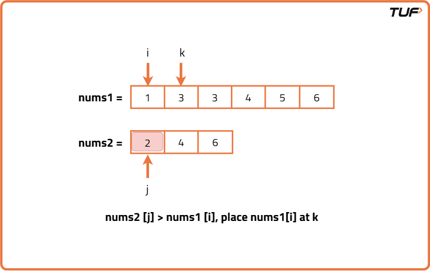
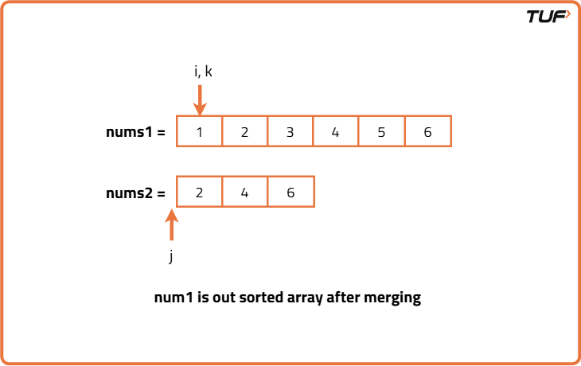

Merge two Sorted Arrays Without Extra Space
Problem Statement: Given two sorted integer arrays nums1 and nums2, merge both the arrays into a single array sorted in non-decreasing order.
The final sorted array should be stored inside the array nums1 and it should be done in-place.
Array nums1 has a length of m + n, where the first m elements denote the elements of nums1 and rest are 0s whereas nums2 has a length of n.
Examples
Input : nums1 = [-5, -2, 4, 5, 0, 0, 0], nums2 = [-3, 1, 8] Output : [-5, -3, -2, 1, 4, 5, 8] Explanation : The merged array is: [-5, -3, -2, 1, 4, 5, 8], where [-5, -2, 4, 5] are from nums1 and [-3, 1, 8] are from nums2 Input : nums1 = [0, 2, 7, 8, 0, 0, 0], nums2 = [-7, -3, -1] Output : [-7, -3, -1, 0, 2, 7, 8] Explanation : The merged array is: [-7, -3, -1, 0, 2, 7, 8], where [0, 2, 7, 8] are from nums1 and [-7, -3, -1] are from nums2
Disclaimer: Here is the practice link to help you assess your knowledge better. It's highly recommend trying to solve it before looking at the solution.
Approach
Algorithm
We are given two sorted arrays nums1 and nums2 and nums1 has enough space at the end (filled with zeros) to accommodate all elements from nums2.
Now, if we try to insert elements from nums2 into nums1 from the beginning, we would need to shift elements in nums1 every time to make room which becomes time consuming and inefficient.
Since both arrays are sorted in non-decreasing order, the largest elements will be at the end of each array. If we start comparing elements from the back of both arrays and place the largest one at the end of nums1, we won't need to shift anything.
To efficiently insert elements at the end, we will use three pointers.
Since both arrays are sorted in non-decreasing order, the largest elements will be at the end of each array. If we start comparing elements from the back of both arrays and place the largest one at the end of nums1, we won't need to shift anything.
To efficiently insert elements at the end, we will use three pointers.
- Initialize three pointers: One points at the last valid index (excluding zeros) of nums1, one points at the last valid index of nums2 andd the last pointer points to last index of nums1.
- Compare the elements pointed by the first two pointers and whichever is larger, place it at the third pointer's index.
- Move the respective pointer one step back and also move the third pointer one step back.
- If there are any remaining elements in nums2, then copy them in nums1. If any elements remain in nums1, they’re already in place
- The result is a fully merged and sorted array stored in nums1 itself.






Code
#include <bits/stdc++.h>
using namespace std;
class Solution {
public:
// Merges nums2 into nums1 in-place in sorted order.
void merge(vector<int>& nums1, int m, vector<int>& nums2, int n) {
// i points to last valid element in nums1
int i = m - 1;
// j points to last element in nums2
int j = n - 1;
// k is the last index of nums1 (including 0 placeholders)
int k = m + n - 1;
// Fill nums1 from the end by comparing nums1[i] and nums2[j]
while (i >= 0 && j >= 0) {
// Place larger of the two at nums1[k]
if (nums1[i] > nums2[j]) {
nums1[k--] = nums1[i--];
} else {
nums1[k--] = nums2[j--];
}
}
// If nums2 has remaining elements, copy them
while (j >= 0) {
nums1[k--] = nums2[j--];
}
// No need to copy remaining nums1 elements, as they are already in place
}
};
int main() {
vector<int> nums1 = {1, 3, 5, 0, 0, 0};
vector<int> nums2 = {2, 4, 6};
int m = 3, n = 3;
Solution().merge(nums1, m, nums2, n);
// Print merged array
for (int num : nums1) cout << num << " ";
return 0;
}
Complexity Analysis
Time Complexity: O(N+M), we traverse both the arrays exactly once.Space Complexity: O(1), constant extra space is used to store pointers.